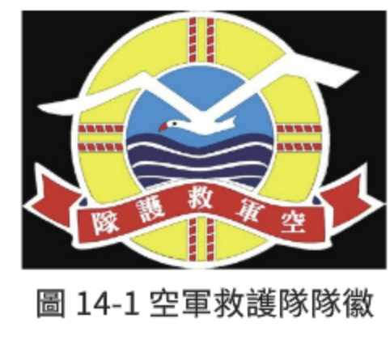
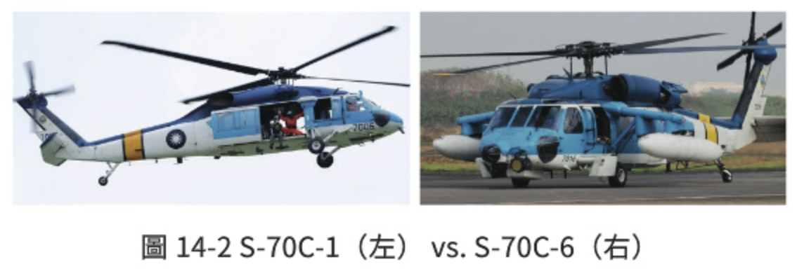
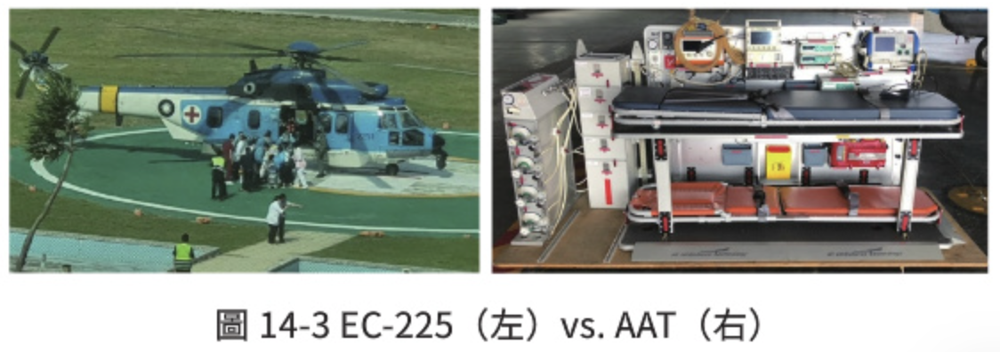
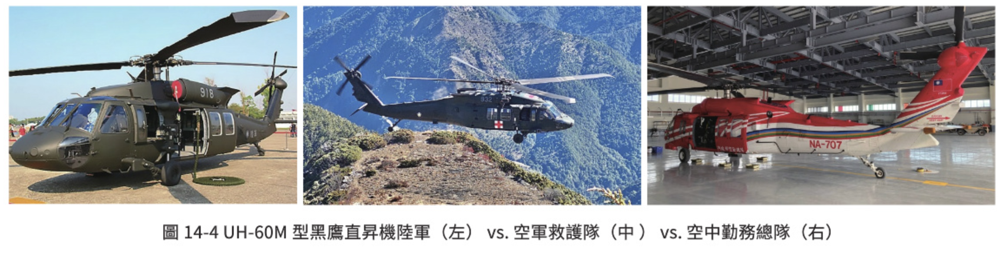
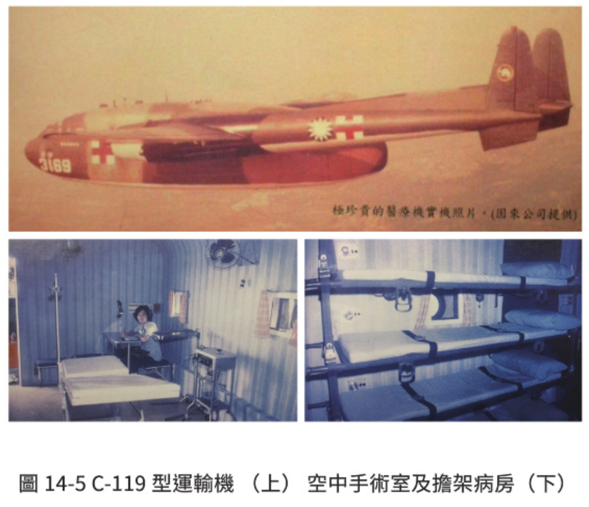
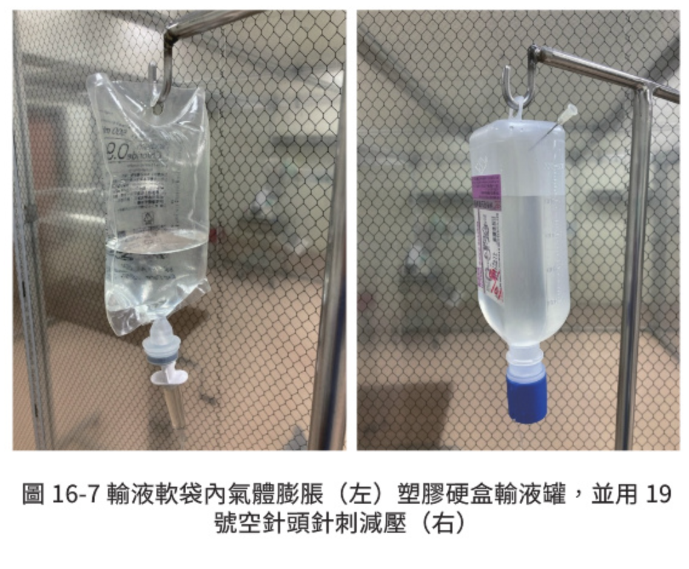
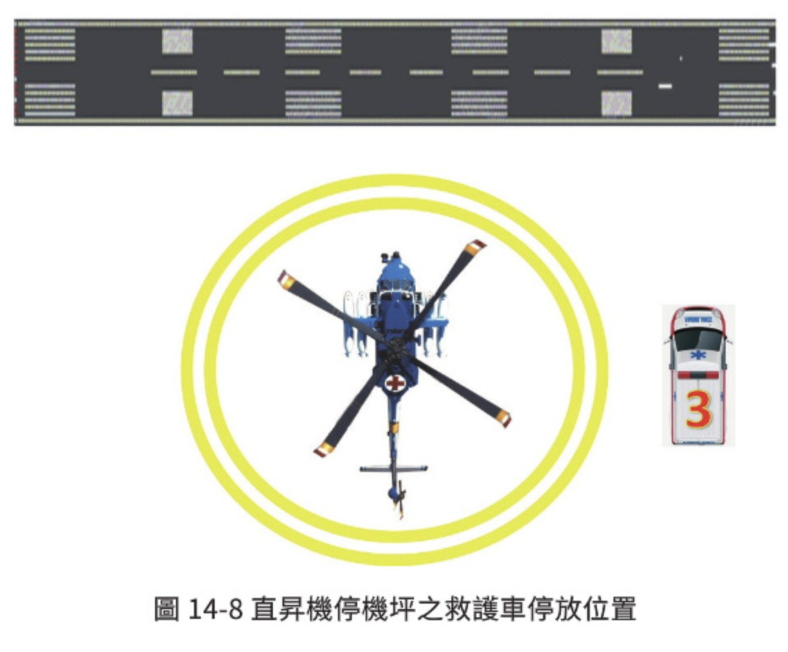
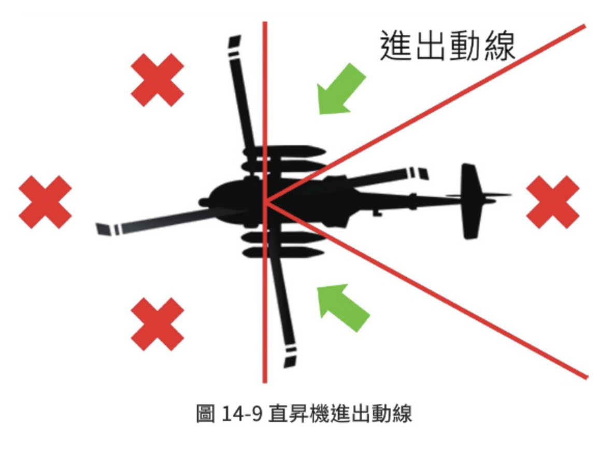
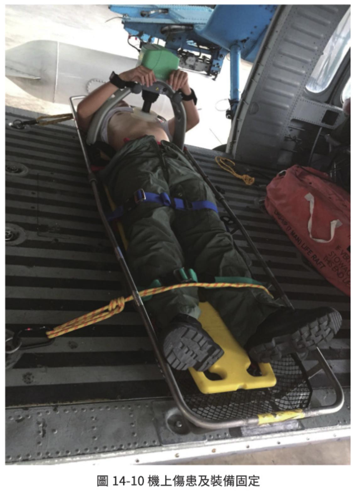
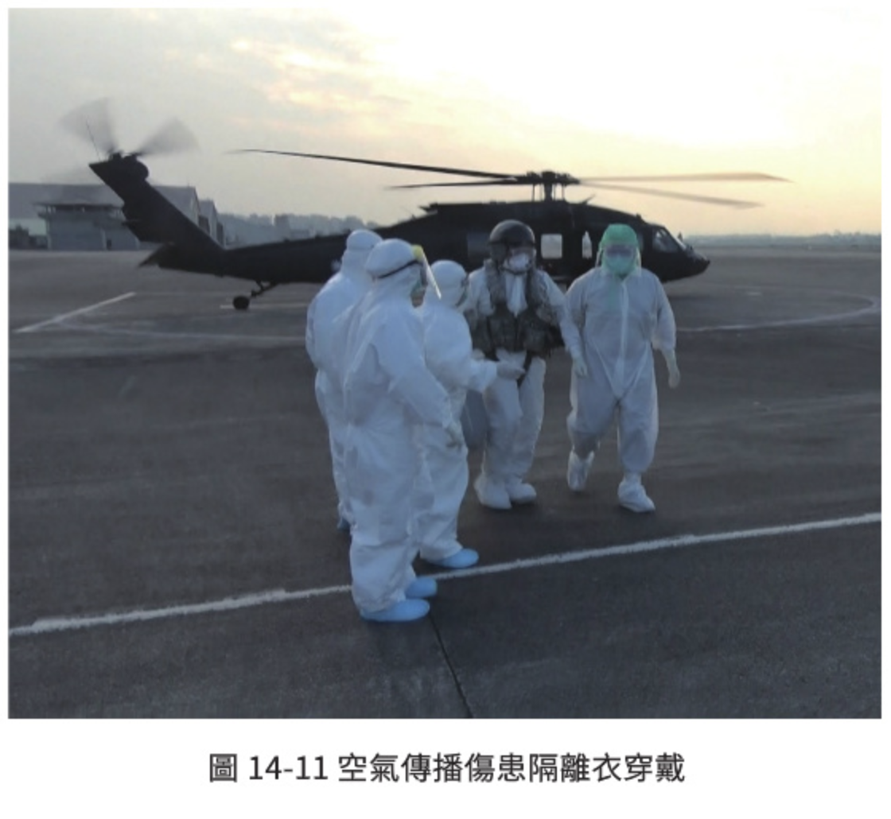

前言 空中救護概論、現況與相關法規
空中救護＝緊急醫療×非定期飛行。整章只有一句話最重要：飛行安全永遠優先於一切，即使任務本身的目的是拯救垂危的性命。
🎯 學習目標
- ☑認識空中救護及任務類型
- ☑瞭解臺灣空中救護現況及相關法規
- ☑理解航空生理對人體的影響
- ☑瞭解常見空中轉送航程中照護
- ☑總結空中救護作業之風險管理
編撰委員：徐克強 醫師（三軍總醫院）、陳哲輝 教官（國家搜救指揮中心空中轉診審核中心）、李佳翰 教官（空軍救護隊）、黃至正 教官（安捷航空）
🚁 三個貫穿全章的原則
五個小節看似分散，其實都在回答同一個問題：「這趟飛行值不值得、安不安全、能不能救到人。」
把人從危險裡拉出來。從危急或不穩定的環境，運送到具備初步醫療資源的地點，是院前救護的延伸。民間形式即 HEMS（直昇機緊急醫療服務）。
把人從醫院送到另一家醫院。兩個醫療設施之間的長程轉送，通常超過 300 浬（約 556 公里），多用定翼機，兩端要有機場與地面救護車接駁。
空中救護「常伴隨時間緊迫與環境惡劣」，在不可預知的風險下進行，且無法透過其他運輸工具完成。安全與準則是這個救護方式最重要的課題。
01 空中救護概論及任務類型
先建立價值觀（飛安優先、CRM），再分清兩大任務類型（MEDEVAC / AE），最後用表 14-1 決定「這個病人該用什麼運具」。
- 空中救護結合緊急醫療與非定期飛行兩個高度專業領域，核心價值在於「執行救命同時保持飛行安全」。
- 救護模式通常在不可預知的風險下進行，且無法透過其他運輸工具完成，因此安全與準則是最重要的課題。
- 飛行器上的最高指揮官是機長，負最終決策責任；緊急狀況下即便病人非常危急，機長仍必須確保飛行的穩定與安全。
- 保障所有機組員平安到達指定地點降落，為最優先考量。
- 醫療技術之外，前提是完善的訓練與周密的航程規畫：氣象條件預判、飛行路徑選擇、緊急情況備用方案，缺一不可。
- 醫護人員必須接受專業航空醫學訓練，瞭解飛行環境對病人生理狀況的影響，並在有限空間與時間內提供即時救護與適當選擇。
🕊 「聞聲救苦」的兩層考驗
要使「聞聲救苦」的精神得以彰顯，面對的不僅是技術與體力的考驗，更是對生命價值的回應。醫護人員與飛行組員在面臨極端條件下，彼此合作共同克服險阻，成功拯救的任何一條生命，都是對平時組員管理訓練成果的最高讚賞。
空中救護的核心關鍵，在於兩個專業領域的組員資源管理，達成安全挽救危急病人的最終目標。而這一切的實現，必須以飛行安全為基礎，確保機組人員與病人的平安，方能進一步將緊急救護的專業發揮到極致。
兩類任務皆依賴航空器的快速反應與機動性，提供病人從危險區域或醫療資源不足地區移至進階醫療單位的轉送服務；但在執行範圍、工具與操作方式上存在顯著差異。
（一）醫療後送 MEDEVAC
Medical Evacuation
- 將傷患從危急或不穩定的環境，透過空中運送至具備初步醫療資源的地點進行緊急搶救。
- 經常與戰地救援相關：戰區內將受傷的軍人或平民從交戰區送至安全區域的初步醫療站。
- 因此 MEDEVAC 通常是院前救護的延伸，目標是盡快將病人從生命危險中脫離。
- 民間多以直昇機緊急醫療服務（HEMS）形式呈現，使用直昇機進行短程運輸，尤其在地面交通無法迅速到達的地區，如偏遠地區或災難現場。
- 臺灣代表：空軍救護隊、空中勤務總隊、衛福部離島航空器駐地備勤及運送服務計畫，旨在迅速反應並將緊急傷病患轉移至就近的高階醫療機構，實施搶救或手術介入治療。
（二）空中醫療轉送 AE
Aeromedical Evacuation
- 針對長程的醫療運送，通常涉及兩個醫療設施之間的轉送。
- 距離通常超過 300 浬（約 556 公里）（表 14-1）。
- 多半利用定翼機：飛行距離較長、機艙環境較穩妥，但需要具備跑道的機場起飛及落地。
- 操作模式為兩端醫療機構或醫療站之間的病人轉運，並需在兩端機場安排地面救護車接駁。
- 多用於跨國或跨區域的空中救護，尤其涉及專門醫療資源或回國返鄉 (Repatriation) 需求時。以臺灣為例，現今國際救援公司提供跨國空中醫療轉送服務。
| 比較項目 | 地面運輸 | 直昇機 | 定翼機 |
|---|---|---|---|
| 最佳範圍 （通常情況） | 0–50 浬 | 50–150 浬 | 渦輪螺旋槳：>150 浬 噴射機：>300 浬 |
| 成本 | 低 | 高 | 高 |
| 複雜性 | 低 | 高 | 高 |
| 航空醫療人員 | 高多變性 | 專業運輸人員 | 專業運輸人員 |
| 天氣 | 受天氣影響最小 | 最受天氣影響 | 受天氣影響比直昇機少 |
| 運輸安全性 | 重大安全問題 | 重大安全問題 | 安全性最高 |
| 主要優勢 | 可用性最高； 最低的成本 | 靈活性高，可在現場和醫院降落；運輸速度快 | 高速長距離運輸 |
| 主要限制 | 路況、交通 | 易受天氣影響 | 需要機場 |
出處譯自：Hurd WW, Beninati W, editors. Aeromedical Evacuation: Management of Acute and Stabilized Patient. P.43, Chap 4. Civilian Air Medical Transport. New York: Springer-Verlag; 2019. ISBN 978-3-030-15903-0.
把表 14-1 的第一列畫成距離帶，決策時一眼看出「這段距離該找誰」。
＊定翼機以渦輪螺旋槳 >150 浬起算，噴射機 >300 浬；圖中以 300 浬為顯示上限。
02 臺灣空中救護現況及相關法規
臺灣的空中救護分成兩條路：到院前的緊急運送與院際間的緊急轉送。兩條路的申請窗口、執行單位都不一樣，先分清楚，再認識七個單位。
海巡署、各縣市消防局等
大多為山域事故、海上救難，及因天災造成孤島效應之地區的緊急傷病患與人道救助。
臺東縣蘭嶼鄉、綠島鄉：內政部空中勤務總隊航空器協助為主
對象主要為離、外島地區急、重、難症，或當地醫療機構無法處置之傷病患，將其安全且快速地送往本島醫學中心或指定責任醫院接受緊急醫療處置。
於嘉義成立直昇機部隊
中華民國空軍的救護部隊，通稱海鷗部隊，開始肇建。
改編為空軍救護隊、更改部隊番號
民國 41 年改編為空軍救護隊，民國 72 年更改部隊番號為空軍救護隊（圖 14-1）。早期機種——定翼機：C-47、PBY、HU-16 水陸兩用機；直昇機：H-5、H-13、H-19、HH-1H。
S-70C 系列進場，開始夜間搜救
民國 75 年購入 S-70C-1 型機 14 架；86 年購入 S-70C-6 全天候搜救機 4 架（圖 14-2）；87 年開始執行夜間搜救任務。
EC-225 型機 3 架，加裝 AAT 醫療模組
加裝空中緊急醫療救護模組（Air Ambulance Technology, AAT，圖 14-3）。
任務型態轉折：民間搜救移交
空中勤務總隊接收國防部 UH-60M 黑鷹直昇機後，由國家搜救指揮中心依權責劃分統一調派；至此空軍救護隊轉為專職軍事任務為主、民間搜救為輔。
UH-60M 成為主力機種
接收陸軍移撥 UH-60M 型黑鷹直昇機 15 架（圖 14-4），取代 S-70C-1；S-70C-1 已全面退役。
| 機種 | 現況 |
|---|---|
| S-70C-1 | 已全面退役 |
| S-70C-6 | 民國 101 年蘭嶼外海執行搜救時墜毀 1 架，現存 3 架持續服役 |
| EC-225 | 現存 3 架持續服役 |
| UH-60M | 民國 109 年專機任務墜毀 1 架於新北市烏來山區，剩餘 14 架服役；目前主力機種 |
- 主要任務：軍事搜救、沿海巡邏、偵照、運補、元首及政府軍政首長視導專機、新武器研發支援。
- 兼負民間救護：山、海難、空難、緊急傷病患後送及重大災害搶救。
- 核心任務：以飛行員落海搜救為主要核心。
- 早期民間搜救由內政部警政署空中警察隊負責，因飛機性能限制，海拔 2,500 公尺以上由空軍救護隊執行。

（課本 P.380 左欄）

（課本 P.380 左欄，兩張並排）

（課本 P.380 左欄下方）

陸軍（左）／空軍救護隊（中）／空中勤務總隊（右）
（課本 P.381 上方三張並排）
823 砲戰
前線產生大量傷患，急需後送返臺治療。國軍立即建立緊急空中傷患後送之醫療量能，以減低官兵於戰場折損率為考量，規劃相關救傷機制因應戰場需要。
成立「空中傷患後送分隊」
於空軍第 439 聯隊成立，隸屬空軍六聯隊第六醫務中心，調派 C-46 型運輸機專職東沙、金門外島傷患後送，成為國內當時唯一的空運傷患單位。
C-119 換裝與「3169」醫療專機
空運部隊全面換裝 C-119 型運輸機（圖 14-5）。民國 65 年將「3169」號 C-119 改裝為專供軍醫使用之傷患後送醫療專機，主機艙區隔為手術室及擔架病房（圖 14-5），可供醫護人員於飛行期間實施手術以爭取時效。
醫療專機止於地面演練
因本、外島後送任務起降航程短等諸多因素考量，醫療專機僅用於地面演練及示範，未能實際執行空中任務，成為軍陣醫學研發的實驗計畫。後續購置 C-130H 型運輸機，服役至今。
編組為「空中傷患後送小組」
因應國軍組織調整而改編。

（課本 P.381 右欄，上下共 3 張，可合成一張）
現況：空軍第六聯隊空中傷患後送小組
- 主要執行外島傷患後送本島任務；平時執行傷患轉送任務為交通班機兼施。
- 現可編成 5 組傷患後送組。
- 每架次任務人力編制為 2 員空勤醫療組員：航空護理官及航空救護士各 1 員。
- 飛行過程中需時刻注意患者病情變化及家屬身心狀態，給予立即應對護理處置及照護。
後送專機抵達目的地機場時，航空護理官立即前往病人救護車上針對患者進行快速、確實的全面性評估，看病人當下狀況是否適合使用空中後送。若當下判斷患者情況不適合上機，則現場宣布任務取消，將病人送回當地醫療機構在地醫療，以確保病人的航程後送安全。
八掌溪事件後，為解決缺乏協調、整合之困境，因應公有航空器分屬不同機關造成調度困難，將四個單位之航空器統一統籌指揮，於民國 94 年 11 月成立內政部空中勤務總隊。
空中警察隊
空中消防隊籌備處
航空隊
空中偵巡隊
緊急搜救之支援調度
緊急救援之支援調度
緊急救護之支援調度
註：其中緊急傷病患之空中緊急救護及移植器官空中運送，係指「救護直昇機管理辦法」第二條之空中緊急救護及移植器官之空中運送。
民間參與的起點
亞太航空引進美國 BELL-412 型直昇機，已完成加裝救護構型，邀請國外航空醫師及高級救護技術員各一名於松山機場專業演示，當時規劃為自費包機模式。
健全緊急醫療救護體系五年計畫
行政院衛生署於 1 月 1 日訂定，並鑒於部分山地離島、外島等醫療資源不足區域需要空中救護；同年 9 月 25 日訂定「山地離島地區嚴重或緊急傷病患就醫交通費補助試辦要點」，規範補助區域、方式與緊急傷病患要件。
澎湖縣後送計畫（未續辦）
澎湖縣政府訂定「澎湖縣九十一年度急診重症緊急救護直昇機後送計畫」並與德安航空簽約；但因七美延誤就醫案件經監察院糾正後，無意願續辦。
航空器駐地化的第一步
金門縣委託德安航空試辦「離島航空器駐地備勤及運送服務計畫」，正式將空中救護的航空器駐地化，但因遇 SARS 及「救護直昇機管理辦法」公布實施而結束試辦。同年 10 月金門縣府與中興航空簽訂常態性駐地契約，成為國內第一架民用救護專用直昇機常態性進駐離島。
改用定翼機、擴大補助
中興航空服務期間經歷 2 次重大飛安事故，基於飛航安全考量改用定翼機進駐離島。民國 98 至 100 年衛福部先後補助臺東縣蘭嶼鄉、綠島鄉、連江縣、澎湖縣望安鄉緊急醫療空中後送之隨機人員費用與救護器材。
三離島委託駐地 ＋ 空轉後送遠距會診平臺
107 年由衛福部補助，金門、連江、澎湖三離島縣衛生局委託民間航空器駐地備勤；108 年 7 月 1 日起逐步啟用「空轉後送遠距會診平臺」，將空中轉診申請全面電子化，導入多方資訊共同決策，降低夜航架次及不必要的後送，改善醫病關係、提升緊急醫療品質。
| 地區 | 機型／執行方式 |
|---|---|
| 金門縣 | 定翼機（駐地備勤） |
| 澎湖縣 | 直昇機（駐地備勤） |
| 連江縣 | 直昇機（駐地備勤） |
| 臺東縣 綠島鄉・蘭嶼鄉 | 由內政部空中勤務總隊協助緊急醫療轉送；中央補助臺東縣府委託廠商辦理隨行上機救護人員及醫療器材 |
🎓 隨機人員資格（考點）
採購計畫規範連江縣、金門縣及澎湖縣航空器駐地備勤之廠商，需派任 1 名以上具中級救護技術員（含）以上資格，且受過空中救護相關教育訓練之專業人員，執行空中緊急醫療轉診任務。
臺東縣綠島鄉、蘭嶼鄉隨行上機救護人員亦需為中級救護技術員（含）以上資格，並受過空中救護相關訓練。
NACC 全國空中緊急醫療救護諮詢中心
行政院衛生署邀請專家學者共同討論及制定「救護直昇機管理辦法」，建立空中救護審核機制，委託專業團體派遣醫療團隊進駐消防署救災救護指揮中心，成立 National Aeromedical Consultation Center (NACC)，並制定「衛生署空中轉診審核中心離島地區緊急空中後送案件標準作業流程」，提供全天候 24 小時空中轉診專業審核。
正名「空中轉診審核中心」NAAC
正名為「行政院衛生署空中轉診審核中心」，簡稱空審中心（National Aeromedical Approval Center, NAAC）。
改組升格為衛生福利部空中轉診審核中心
負責促進空中救護品質，並建立審核機制。
空審中心（NAAC）的組成
由執行長與急診醫學、重症醫學、航空醫學及災難醫學四大專科共 32 名醫師進駐消防署救災救護指揮中心輪值審核。
- 到院後送所需之空中醫療轉送必要性評估。
- 核定空中醫療轉送及器官運送申請之相關事項。
- 聯繫申請空中後送醫院及接受醫院。
- 協調隨行醫護人員之派遣及醫療設備。
- 提供國搜中心救護技術員空中緊急救護案件必要之醫療諮詢。
- 建置空審中心資料庫。
發生於臺灣嘉義縣，造成 4 名受困河床民眾不幸被洪水沖走死亡。事件檢討主要原因是救災「制度不夠健全、程序不夠明確、人員不夠積極」。
成立行政院國家搜救指揮中心（NRCC）
為整合及強化國內救災資源，奉行政院指示，先以當時國防部國軍搜救協調中心作為作業幕僚，並以任務編組方式成立National Rescue Command Center (NRCC)，簡稱國搜中心。
莫拉克颱風「八八風災」
政府重新檢討災害防救體系及相關法規。
納入「災害防救法」
由中央災害防救委員會設立國搜中心，負責統籌、調度國內各搜救單位資源，執行災害事故之人員搜救及緊急救護之運送任務，確立法制地位及法源依據，完成國搜中心法制化。
| 國家搜救指揮中心之任務項目 |
|---|
| 1. 航空器、船舶遇難事故之緊急搜救支援調度。 |
| 2. 緊急傷（病）患之空中緊急救護支援調度。 |
| 3. 移植器官之空中運送支援調度。 |
| 4. 山區、高樓等重大災難事故之緊急救援支援調度。 |
| 5. 海、空難事故聯繫、協調國外搜救單位或其他重大災害事故之緊急救援支援調度。 |
其中緊急傷病患之空中緊急救護及移植器官空中運送，係指「救護直昇機管理辦法」第二條之空中緊急救護及移植器官之空中運送。
母法：緊急醫療救護法 第 22 條
民國 84 年制定公布，第 22 條為授權依據。民國 102 年修正為：「救護直昇機、救護飛機、救護船（艦）及其他救護車以外之救護運輸工具，其救護之範圍、應配置之配備、查核、申請與派遣之程序、停降地點與接駁方式、救護人員之資格與訓練、勤務人數、勤務紀錄之製作與保存、檢查及其他應遵行事項之辦法，由中央衛生主管機關會同有關機關定之。」
現行主要法規：救護直昇機管理辦法
現行臺灣空中救護所適用之法規主要為此辦法，係依上開授權訂定。
修正中：空中救護運輸工具管理辦法（草案）
基於綠島、蘭嶼、澎湖、金門、連江等離島及偏遠地區，受限交通不便與醫療資源缺乏，空中救護需求較高，有增列救護飛機及其他空中救護運輸工具之需要，衛生福利部於民國 111 年公告修正草案。
須由當地消防局提交申請案至內政部消防署救災救護指揮中心。
由傷病患就診之醫院填寫申請表，向內政部消防署救災救護指揮中心敘明轉診安排之情形，並副知當地衛生局。
後由中央衛生主管機關委託專業團體或空中轉診審核中心派遣執行任務。前述空中緊急救護或空中轉診，地方政府或相關機構與民間救護直昇機訂有合約者，逕向當地衛生局或相關機構申請派遣該合約民航業者為之。
⚖️ 執行空中救護的三大原則
- AC 120-033D緊急醫療服務飛機之飛航作業，105.03.15
- AC 120-045救護直昇機之飛航作業，99.02.25
合約之民航業者，須依循民航通告提供空中救護及緊急醫療服務航空器之使用人，編訂作業程序及準則。
03 航空生理對人體的影響
高空的四個物理事實——低壓、低氧、低溫、低濕——會改寫你在地面熟悉的每一項處置。理解這些變化並在適當時機調整，是空中救護成功的關鍵。
氣體膨脹
P 氧氣下降
約降 2°C
約 20%
氣體體積與壓力成反比 → 壓力減少時，氣體體積增加。
靜脈輸液流速
氣壓下降 → 輸液軟袋內氣體膨脹（圖 14-7）→ 相對增加向下液體的流速 → 導致輸液速率變化。
處置：考量調整輸液速率閥門，或使用塑膠硬盒輸液罐，並用 19 號空針頭針刺減壓（圖 14-7），避免壓力及氣體膨脹效應，維持靜脈輸液壓力，保障所需的輸液速率。
氣管內管的氣囊
氣體膨脹效應在不同飛行高度，可能使氣囊過度充氣或洩氣，導致周圍組織壓迫或密合不良，造成氣管損傷或氣體洩漏。
處置：適當調整氣囊壓力，維持在 20–30 cmH₂O。

（課本 P.386 左欄下方，兩張並排）
＊課本圖說誤植為「圖 16-7」，依章次應為圖 14-7
混合氣體中，各組成氣體的分壓與其摩爾分率成正比，總壓力是各分壓之總和：
- 飛行高度增加 → 外界大氣壓力（P 總和）降低 → P 氧氣也隨之下降（因氧氣摩爾分率約 21% 保持相對穩定）。
- 肺泡中的氧濃度（氧氣在肺泡內的分壓）相應減少 → 影響血氧飽和度和整體氧合狀態。
- 對已有呼吸功能不全或氧合障礙的病人，低氧環境可能導致血氧飽和度進一步下降。醫療人員應提前考慮使用氧氣供應設備，確保提供足夠氧氣濃度以維持病患血氧飽和度。
- 一般情況下，飛行高度達 8,000 至 10,000 呎時，非病態人群的血氧飽和度可能下降至 94% 左右而無任何危害。
- 高風險族群：肺部慢性纖維化、慢性阻塞性肺疾病（COPD）等肺泡交換氧氣功能受阻的患者，這種低氧環境可能引發危險的低氧血症，必須依病人具體狀況調整氧氣治療需求。
依課本數據建構的趨勢示意：氣溫每上升 1,000 呎約降 2°C；非病態人群於 8,000–10,000 呎 SpO₂ 約降至 94%。
＊示意曲線，非實測值；氣溫以地面 25°C 起算。
- 對急重症患者生理影響尤為顯著，尤其重大外傷且處於休克狀態的病人：低溫導致失溫 → 進一步加劇循環不良、酸血症併惡化凝血功能。
- 強調保暖措施：保溫毯、低體溫防護處置包（Hypothermic Prevention & Management Kit, HPMK）、加熱的輸液裝置、暖風設備，用來維持病人的核心體溫。
- 無法自主調節體溫的重傷者風險最高：高海拔失溫患者、落水飛行員、嚴重外傷低容休克、重度昏迷或麻醉狀態下的病人；低溫可能增加併發症風險，進而影響預後。
- 持續監測體溫，適時進行主動增溫措施，是空中轉送中不可或缺的一部分。
- 引發無感知的脫水 → 血液濃度增加 → 可能增加血栓形成的風險。短航程風險較低，但長程飛行中脫水狀況的評估及適當補液絕不得忽視。
- 眼部與黏膜：對昏迷或無法自主閉眼的患者，應使用眼藥膏並以紗布覆蓋眼睛，防止角膜乾燥與受損。
- 氧氣治療的陷阱：供氧會進一步加劇黏膜脫水乾裂 → 建議在氧氣治療時加裝潮濕瓶增加吸入氣體的濕度。
- 依病人實際情況適當增加液體輸注量，以抵抗潛在的低濕度蒸散脫水效應。
🧭 五、綜合應對策略：Pre-fly the patient
飛行醫療任務前，先模擬整個航程是相當重要的步驟：提前進行完整的病人生理評估、瞭解病人的需求，而不是大全套什麼都帶（航空器必須考量載重平衡）。
04 常見空中救護航程中照護
病情掌握與護理需求都會受飛行環境影響。瞭解各種常見疾病狀況下的最佳照護措施，並針對空中環境的特殊挑戰進行適應，是確保安全和有效救護的不二法門。點選下方任一病況查看重點。
一、心臟血管相關急症
在空中轉送途中，由於高空環境的特殊性與資源稀缺性，醫療人員需依據不同病人的病情，靈活運用照護策略。針對飛行過程中的特殊挑戰，精確評估病情變化並實施適當的醫療處置，能顯著提高病人的安全性和生存機會。
05 空中救護作業之風險管理
從天氣、落地點、接近方向到裝卸載流程——這一節全部是「不做會出事」的實務規範。EMT 最常直接遇到的，是機坪交接與三、九點鐘接近原則。
① 天氣是決定起飛標準的第一因素
包含風向、風速、能見度、雷雨。起飛前需確認駐地、目標區域及沿途天氣是否符合標準，甚至附近備降場之天氣限度，等種種因素關乎直昇機是否可受令執飛。
② 機務狀態確認
天氣因素排除後，飛行前檢查、開車檢查，確認飛機機務狀態無虞，才能確保執行任務之飛航安全。
③ 目標區屬未知區域，潛在危安因素多
若任務屬傷患空中轉送，通常選擇有塔臺及相關人員引導的標準機場以減少安全風險，但仍需組員確認場外環境是否安全。
④ 院前山區救援：落地考量更複雜
- 優先考量該任務區無線電能持續構聯，以利管制單位確認狀況。
- 考量山區天氣狀況、雲層變化，並持續觀察該落地點後續天氣是否如前。
- 確認落地點空間大小是否足夠：直昇機落地點（Heli-Pad）基本需要 30m × 30m 空曠區域。
- 周遭是否有突出的障礙物會影響脫離方向及機身結構。
- 下方地質是否足以支撐直昇機重量。

（課本 P.392 右欄，含跑道與 3 點鐘方向救護車示意）
實施機坪交接作業
為什麼是 3 點鐘、平行停放？因臺灣救護車均為後車廂上掀門式，此位置及方向較不易因旋翼產生之氣流，導致救護車上物品飛濺噴出。

（課本 P.393 右上，紅色 ✗ 危險區／綠色 ➜ 安全進出方向）
⚠️ 三、九點鐘方向：唯一的安全進出方向
危險區域
（機身左右兩側）
安全進出
最危險
- 機尾為危險地帶，安全進出方向為機身左右兩側，一般通稱三、九點鐘方向（圖 14-9）；此扇形區域前、後均為危險區域。
- 為什麼前方危險：直昇機在傷病患裝卸載時，會將發動機收至慢車狀態，旋翼轉速下降，造成前方旋翼失去離心力而下沉，故前方旋翼會降低翼尖面高度。
- 為什麼後方更危險：後方有尾旋翼設計，相較之下比前方更加危險。
- 因此將安全進出方向劃定為三、九點位置。
- 派遣單位通知任務屬性、目標區位置、傷病患人數、情況。
- 到達目標區，確認目標位置。
- 依現場狀況執行登機作業，區分為落地接駁與吊掛進艙兩大類。
- 重點均是確認傷病患人數：登機人數需與受令人數一致。
- 如傷病患要求其他人員登機，均須回報機長；機長與管制單位確認是否更改命令。如無法構聯，保持原任務命令執行登機人數之管制。
- 登機後將傷病患實施固定（圖 14-10），且確保後艙人員及裝備都固定妥善，方可告知機長執行起飛程序。
- 起飛穩定後進行人、裝隔離，機組人員確認是否有危險物品及危安因子。
- 確認無虞後執行初級評估並記錄傷病患資料，將初評之生命徵象及基本資訊回報機長，以利機長回報管制單位。
- 執行次級評估，確認主要傷情及相關醫療行為。
- 如有高度或速度之要求，或傷病情疑慮需更改後送醫院，以機內通話告知機長，由機長與管制單位構聯協調是否更改飛行計畫。
- 如需電擊（去顫、整流或起搏）：後艙需先完成絕緣措施程序。
- 再由機長回報欲執行電擊作業，請前艙加強監控儀表資訊，避免飛機進入危險狀態。
- 後續航程持續監控傷情並治療。
- 確認落地機場並獲得許可落地後，確認救護車位置。
- 救護士離艙與救護車 EMT 人員完成傷病患交接。
上述任務為有規範登機人員之任務。如遇大量傷患搜救任務或人員撤離相關任務，沒有明訂上機人數限制，其規範更改為直昇機起飛總重限制。此類任務待救者均盡快解除受災區域，而忽略直昇機載重之危安因素，故仍需依直昇機載重平衡限制下進行撤離；後續登機後醫療處置行為及相關作業與前述略同。

（課本 P.394 左上，擔架綁帶固定實照）
- 接獲離島醫療轉送任務，後艙醫療組員先與管制單位確認傷病患病情，以利整備隨機醫療裝備，為後續機上醫療處置備便。
- 需隨時保持氧氣、電力設施、輸液與急救藥品備援，支持突發狀況應變。
- 如接獲病人為飛沫傳染或空氣傳染性疾病（如 COVID-19 或 SARS 等），且未有呼吸道隔離（如氣管內插管併使用標準過濾裝置的機械性呼吸器）相關措施，起飛前此架次任務組員需穿著防護個裝（PPE，圖 14-11），待確認防護無虞後始可執行任務。
- 新冠疫情期間，臺灣空中醫療轉送配置有充氣式負壓隔離艙，將傷患先行防護至艙體內，再裝載登機返臺隔離治療。

（課本 P.394 右下，黑鷹前組員著白色 PPE 實照）